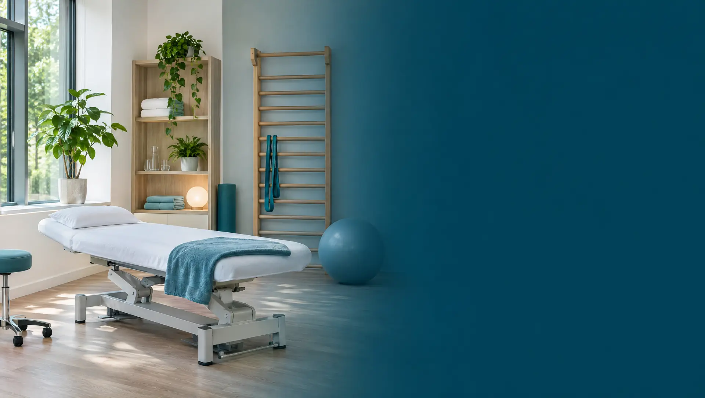
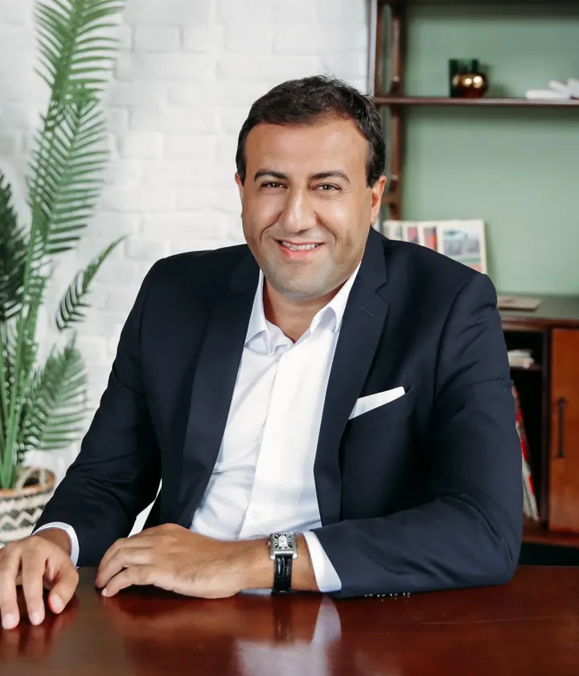
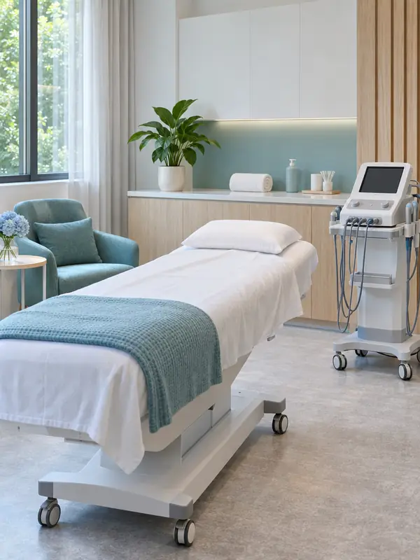
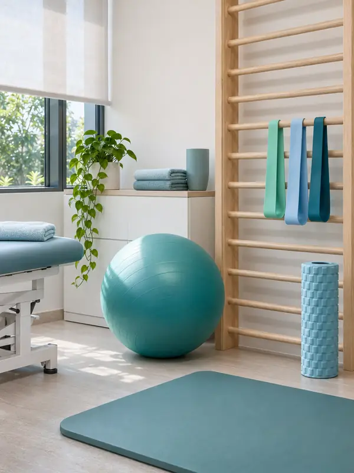
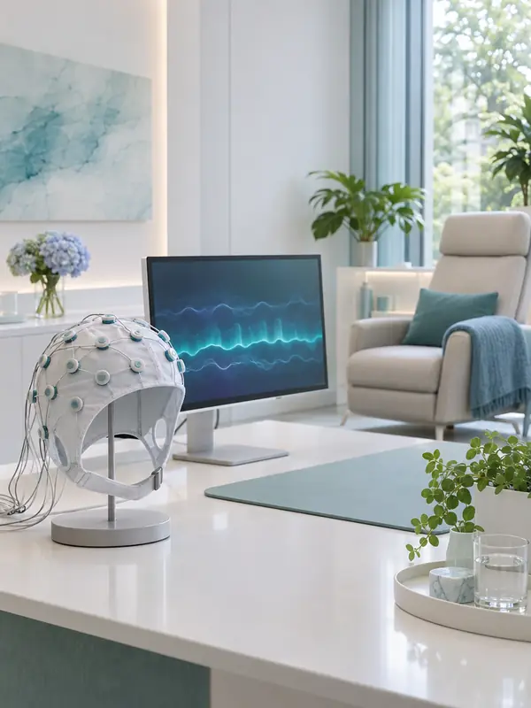

סופיה מדיקל: מרכז מוביל בישראל לשיקום, טיפול בכאב והפרעות שינה
רפואה מתקדמת, צוות מומחים ופתרונות מותאמים אישית לשיפור תפקוד ובריאות המטופלים
קיימים הסדרים עם כללית מושלם, BWell ומגדללייעוץ רפואי בתחום השיקום וטיפול בכאב
אודות המרכז
"סופיה מדיקל" הוא מרכז רפואי פרטי ומתקדם בכפר סבא, המתמחה בשיקום אמבולטורי, פיזיותרפיה מתקדמת, טיפולי פיזיותרפיה, שיקום אורתופדי, שיקום נוירולוגי, שיקום מיני ואורולוגי, טיפול בכאב ואבחון וטיפול בהפרעות שינה.
המרכז פועל בהובלת ד"ר עלא מחאמיד, מומחה ברפואה פיזיקלית ושיקום ומומחה להפרעות שינה, ומעניק שירותים רפואיים ושיקומיים מתקדמים למבוגרים ולילדים, באמצעות צוות רב מקצועי וטכנולוגיות חדשניות.
- שיקום אמבולטורי
- פיזיותרפיה מתקדמת
- שיקום אורתופדי
- שיקום נוירולוגי
- שיקום מיני ואורולוגי
- טיפול בכאב
- אבחון וטיפול בהפרעות שינה

תחומי הטיפול בסופיה מדיקל
רפואה שיקומית מתקדמת
רפואת השיקום מתמקדת בשיפור התפקוד ואיכות החיים של אנשים עם מוגבלות פיזית או נכות, הנובעות ממחלה או פציעה. תהליך השיקום כולל שחזור יכולות תפקודיות, פיתוח אסטרטגיות פיצוי ומיצוי הפוטנציאל האישי של כל מטופל, במטרה להשיג עצמאות תפקודית מרבית ולשפר את איכות החיים.
בסופיה מדיקל פועל צוות רב תחומי הכולל רופאי שיקום, פיזיותרפיסטים, מרפאים בעיסוק ואנשי מקצוע פרא רפואיים נוספים, הפועלים יחד לבניית תוכנית טיפול מותאמת אישית. המרכז מעניק טיפול למטופלים לאחר אירוע מוחי, פגיעות ראש, מחלות נוירולוגיות כגון טרשת נפוצה ופרקינסון, פגיעות בעמוד השדרה, פגיעות אורתופדיות, קטיעות גפיים, שברים קשים, קשיי הליכה, הפרעות שיווי משקל ועוד.
המשך קריאהפחות
תהליך השיקום מתבצע תוך התייחסות לגורמים נלווים המשפיעים על התפקוד ואיכות החיים, ובהם הפרעות שינה, הפרעות זקפה, כאב כרוני, מצב נפשי, פוסט טראומה, מחשבות טורדניות ותסמינים של PTSD. הטיפול ניתן בגישה משולבת רפואית ופרא רפואית, בהתאם לצורכי המטופל ולמצבו הכולל.
במרכז נעשה שימוש בטכנולוגיות מתקדמות, לרבות טיפול בפולסים אלקטרומגנטיים, וכן טכנולוגיות חדשניות לשיקום נוירולוגי כגון recoveriX, המיועדות למטופלים לאחר אירוע מוחי ולחולים במחלות נוירולוגיות כמו טרשת נפוצה.

מרפאת כאב בכפר סבא: רופא כאב מוביל וטיפול מתקדם
כאב כרוני פוגע בתפקוד, בשינה ובאיכות החיים. בסופיה מדיקל פועלת מרפאת כאב בכפר סבא, המעניקה טיפול מתקדם בכאב בהובלת רופא כאב מוביל, בגישה רב תחומית חדשנית ומותאמת אישית, עם מענה לכל סוגי הכאב.
אנו מטפלים בכאבי גב, כאבי צוואר, כאבים כרוניים, כאב עצבי (נוירופתי), כאבי מפרקים, פיברומיאלגיה, פריצות דיסק וכאב לאחר פציעות או ניתוחים, באמצעות אבחון מדויק והבנה מעמיקה של מקור הכאב.
המשך קריאהפחות
הטיפול משלב טכנולוגיות מתקדמות לטיפול בכאב יחד עם פיזיותרפיה מתקדמת, דיקור סיני וטיפול ללא תרופות ככל האפשר, כולל טיפול בגלי הלם, TENS, אולטרסאונד טיפולי, לייזר רך, PEMF ו-CES. בנוסף, אנו מציעים דיקור סיני לכאבי גב, צוואר וכאב כרוני לשיפור תפקוד והפחתת כאב.
הצוות הרב מקצועי כולל רופא כאב, רופאי שיקום, פיזיותרפיסטים ומטפלים בדיקור סיני, הפועלים יחד לטיפול בשורש הבעיה. במידת הצורך משולב גם אבחון וטיפול בהפרעות שינה כחלק מהתהליך.

אבחון וטיפול מקצועי בהפרעות שינה
בעיות שינה משפיעות באופן ישיר על הבריאות הגופנית, התפקוד הקוגניטיבי, מצב הרוח והיכולת להתמודד עם כאב. בסופיה מדיקל פועל מערך מקצועי המתמחה באבחון מדויק ובטיפול ממוקד בהפרעות שינה, תוך שילוב ידע רפואי מתקדם וטכנולוגיות אבחון מהשורה הראשונה.
תהליך האבחון כולל בדיקות שינה ביתיות או בדיקות מלאות במכון השינה של המרכז, בהן נמדדים פרמטרים כגון נשימה, פעילות מוחית, תנועות שרירים ודפוסי שינה מורכבים. לאחר קבלת התוצאות נבנית תכנית טיפול אישית, הכוללת הדרכה לשיפור היגיינת שינה, טיפול בדום נשימה, התאמת מכשירי CPAP במידת הצורך ושילוב טכנולוגיות משלימות כמו CES להפחתת מתח ונדודי שינה.
המשך קריאהפחות
בסופיה מדיקל ניתן טיפול מקצועי בהפרעות שינה על ידי מומחים מובילים בתחום רפואת השינה. לצד אבחון מתקדם, משולבים טיפולים מוכחים ויעילים, כולל CBT-I: טיפול קוגניטיבי התנהגותי לנדודי שינה, הנחשב לקו הטיפול הראשון והיעיל ביותר לבעיות שינה כרוניות.
הטיפול מותאם אישית לכל מטופל, ומשתלב במידת הצורך עם תהליכי שיקום וטיפול בכאב, במטרה לשפר את איכות השינה, הבריאות הכללית והתפקוד היומיומי.

פיזיותרפיה מתקדמת בכפר סבא
בסופיה מדיקל אנו מציעים פיזיותרפיה מתקדמת בכפר סבא כחלק ממרכז רב תחומי לשיקום וטיפול בכאב, עם מענה מקצועי ומדויק למגוון רחב של מצבים.
הטיפול מתאים לפיזיותרפיה לכאבי גב, פיזיותרפיה לכאבי צוואר, טיפול בכאב כרוני, פציעות ספורט, שיקום לאחר ניתוח, בעיות יציבה והפרעות תנועה, תוך בניית תכנית טיפול אישית לשיפור תפקוד והפחתת כאב.
המשך קריאהפחות
במרכז אנו משלבים תחומי טיפול מבוקשים: פיזיותרפיה אורתופדית, פיזיותרפיה רצפת אגן, פיזיותרפיה לשיווי משקל וסחרחורת (וסטיבולרית), פיזיותרפיה לימפטית וניקוז לימפטי ושיקום נוירולוגי מתקדם.
הטיפול כולל שילוב של טיפול ידני מקצועי, תרגול שיקומי מותאם אישית וטכנולוגיות מתקדמות כגון טיפול בגלי הלם לדורבן ולכאבים, TENS, אולטרסאונד טיפולי, לייזר רך ו-PEMF, המאפשרים הפחתת כאב, שיפור תנועה והאצת תהליך ההחלמה.
במסגרת הגישה הרב תחומית, הפיזיותרפיה משולבת עם רופא כאב ורופא שיקום, וכן עם דיקור סיני לכאבי גב, צוואר וכאב כרוני, במטרה לטפל בשורש הבעיה ולהחזיר את המטופל לתפקוד מלא.

שיקום נוירולוגי חדשני עם RecoveriX
RecoveriX היא טכנולוגיה מתקדמת לשיקום נוירולוגי המבוססת על ממשק מוח מחשב (BCI) ונוירופידבק בזמן אמת.
במהלך הטיפול המטופל מבצע תרגול מנטלי של תנועה, והמערכת מזהה את פעילות המוח באמצעות EEG ומפעילה גירוי חשמלי ומשוב ויזואלי, ליצירת לולאה סנסו מוטורית המעודדת נוירופלסטיות ושיקום תפקודי.
המשך קריאהפחות
הטיפול מתאים למגוון מצבים נוירולוגיים, כולל שיקום לאחר שבץ מוחי, פגיעות מוחיות טראומטיות (TBI), טרשת נפוצה (MS) ופגיעות עצביות נוספות, גם בשלבים כרוניים.
בסופיה מדיקל אנו משלבים את RecoveriX כחלק מתכנית שיקום רב תחומית הכוללת רופא שיקום, פיזיותרפיה וטכנולוגיות מתקדמות, בהתאמה אישית לכל מטופל, במטרה לשפר תנועה, תפקוד ואיכות חיים.

צוות רב מקצועי
במרכז פועל צוות מגוון ומיומן הכולל: רופאי שיקום, רופאים יועצים בתחומים שונים, פיזיותרפיסטים, פסיכולוגים, קלינאי תקשורת, טכנאי שינה ומרפאים בעיסוק.
לעמוד הצוות המלאהמלצות
ד"ר עלא ליווה אותי לאורך כל הדרך, עם סבלנות, ידע, ואנושיות שלא רואים כל יום.
לא האמנתי ששינה יכולה להשפיע כל כך על איכות החיים שלי, תודה לד"ר על האבחון המקצועי והיחס האישי.
השירות היה מהיר, מדויק ואכפתי. ממליצה בחום לכל מי שסובל מבעיות שינה.
עברתי סדרת בדיקות שינה אצל ד"ר מחאמיד, וקיבלתי טיפול מדויק ששיפר לי את איכות החיים. סבלתי שנים מנדודי שינה, והוא הצליח לאבחן בעיה שלא אובחנה בעבר. ממליץ מכל הלב!
הגעתי לד"ר עלא מחאמיד, מהמובילים בתחום השיקום, לאחר תקופה קשה של כאבים וחולשה. כבר מהמפגש הראשון הרגשתי יחס חם, הקשבה ומקצועיות נדירה.
ד"ר מחאמיד שינה לי את החיים. סוף סוף אני ישן כמו שצריך אחרי שנים של סבל.
מומחה אמיתי! היה לי קושי להירדם במשך תקופה ארוכה, וד"ר מחאמיד ידע לשאול את השאלות הנכונות, להבין את הרקע הרפואי שלי ולהתאים טיפול אישי.
כמטופלת עם בעיית נשימה בשינה, הייתי זקוקה למומחה אמין שיידע להנחות אותי. ד"ר מחאמיד היה מדויק, רגוע, ועם המון סבלנות. ממליצה עליו בחום!
כבר מהשיחה הראשונה ידעתי שאני בידיים טובות. קיבלתי תשובות ברורות וטיפול מעולה.
המלצות וידאו
כי אין כמו לשמוע ממי שכבר עבר את הדרך
שאלות נפוצות
לא מצאתם תשובה? השאירו פרטים ונחזור אליכם.
מהי בדיקת שינה וכיצד היא מתבצעת?
בדיקת שינה בוחנת את שלבי השינה, הנשימה, פעילות המוח, תנועות הגוף וריווי החמצן בדם במהלך הלילה. הבדיקה יכולה להתבצע במכון השינה של המרכז או בבית המטופל, בהתאם למצב הרפואי ולצורך.
האם ניתן לבצע בדיקת שינה בבית?
בהחלט. המרכז מספק מערכות מתקדמות לבדיקות שינה ביתיות, כולל הדרכה מלאה וליווי טכנאי רפואי. הבדיקה הביתית מתבצעת בסביבה הטבעית של המטופל, ומאפשרת תוצאות אמינות ונוחות מירבית.
למי מתאים שיקום אמבולטורי?
השיקום האמבולטורי מתאים למטופלים במצב רפואי יציב, בעלי יכולת להגיע למרכז באופן עצמאי או בליווי בני משפחה או מלווה. זהו פתרון אידיאלי למי שמעוניין להמשיך לגור בביתו תוך כדי טיפול מקצועי ורציף.
כמה זמן נמשך תהליך שיקום?
משך השיקום משתנה בהתאם לסוג הפגיעה ולמצב התפקודי. לרוב מדובר בתהליך של מספר שבועות עד חודשים, תוך ביצוע הערכות תקופתיות והתאמת התוכנית לפי התקדמות המטופל.
האם ניתן לשלב טיפול בשינה עם טיפול שיקומי?
בהחלט. זהו אחד היתרונות של סופיה מדיקל: גישה הוליסטית שמטפלת גם בבעיה השיקומית וגם בהיבטי השינה והנפש, כחלק ממכלול אחד.
האם הטיפולים בטוחים?
כן. כל טיפול מתבצע בפיקוח רפואי מלא על ידי צוות מוסמך, בהתאם להנחיות המקצועיות של משרד הבריאות.